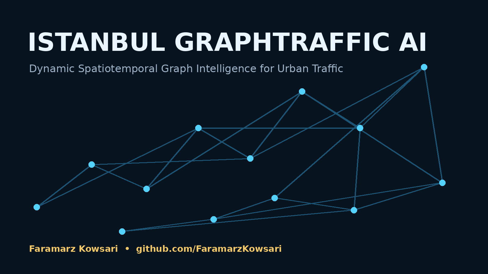
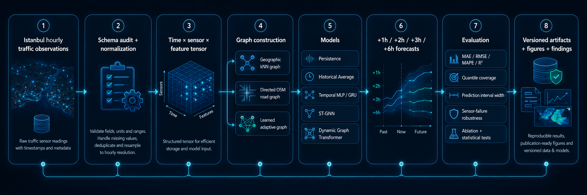
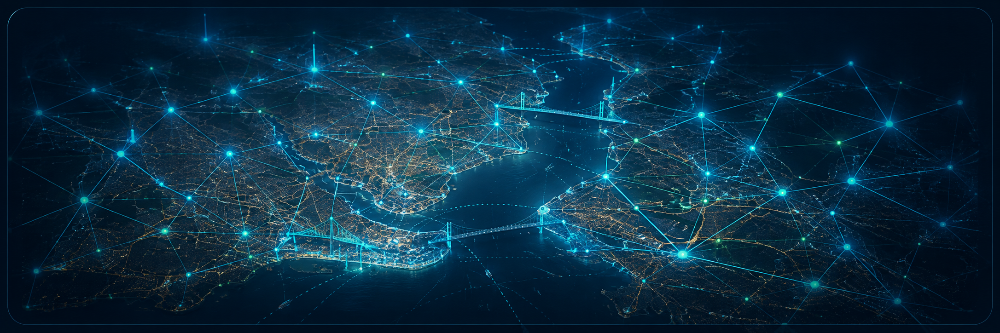

Predicción del tráfico de Estambul con redes neuronales de grafos
İstanbul GraphTraffic AI · ST-GNN · Dynamic Graph Transformer · Predicción multihorizonte
Investigación abierta con redes neuronales de grafos para predecir el tráfico de Estambul
İstanbul GraphTraffic AI es un proyecto reproducible de predicción del tráfico de Estambul que representa los sensores y las relaciones viarias como un grafo. Estudia redes neuronales de grafos (GNN), ST-GNN y Dynamic Graph Transformer para predicciones de +1, +2, +3 y +6 horas, cuantificación de incertidumbre, topología viaria dirigida y robustez frente a fallos de sensores.
Preguntas de investigación
Topología viaria
¿Un grafo dirigido de carreteras mejora la predicción frente a una adyacencia basada solo en proximidad geográfica?
Aprendizaje adaptativo
¿Las conexiones aprendidas capturan dependencias de tráfico que la red física estática no detecta?
Predicción multihorizonte
¿Cómo se comportan ST-GNN y Graph Transformer a +1, +2, +3 y +6 horas?
Red viaria y sensores de tráfico de Estambul como grafo

Flujo ST-GNN y Dynamic Graph Transformer
